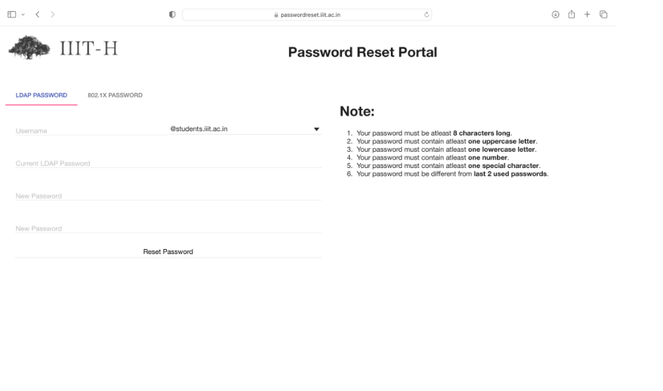

| Description | Mozilla Thunderbird is an email client. |
| Eligibility | All |
| How to setup Thunderbird mail client | Click here |

If you’ve just joined the Institute, whether you’re a student or a new member of staff, we have guidance to help you get set up with all your basic IT needs, such as email and internet access. We’ll also introduce you to the other IT services we offer that can help you make your work or study easier.
Your Institute accounts
Step 2: Find out about your IIIT accounts and how to set them up.
Getting Online
Step 3: How to get onto the internet at the Institute: in your college and department, or even in the Institute.
Getting onto email
Step 4: Get onto your email account and choose how to access messages.
Getting help
Step 5: Don't worry if you have problems; help is available at the Service Desk.
Free from IT Services
Step 6: Explore the free services and facilities available to all Institute members.
You’ll hear a lot of terms relating to your various IT accounts when you join the Institute. Here’s a simple guide to the ones provided centrally, however you may also be given additional account details by your college or department in order to access local facilities.
Everyone at IIIT – staff and students – has an IIIT-H username.
Your IIIT username will form the basis of your various IT accounts – see details below.
IIIT usernames are usually in the format abcd1234: abcd refers to your primary college or department when you first join and 1234 is an identifying number.
You will be automatically assigned your IIIT username when you join the Institute.
If you’re a new student, we will send you your username and activation code by email once we’ve received (and processed) your Institute Card Form. We’ll send it to the personal address held for you on the Institute record, so please ensure the Institute has a working personal email address for you.
If you are an undergraduate, you should make sure your email address is up-to-date on UCAS. If you are a graduate student, you should make sure your email address is up-to-date on the Graduate Applicant Self Service. Otherwise, the details will be sent by internal mail to your main Institute address.
If you are a member of staff, you will receive details of your IIIT username from HR.
Everyone at the Institute – staff and students.
A lot! The Institute’s Single Sign-On (SSO) system means that you can use the same account details to log on to many different services. Your SSO details will let you authenticate to lots of systems (that is, prove you are you), as long as you have an account on that system. Some of the most commonly used are email, Office 365 tools (aka Nexus365) and the virtual learning environment, but there are many more, depending on your role at the Institute.
Your SSO account comprises:
Your SSO account is created automatically for you, but you need to activate your account to complete the set-up.
You will need your activation code (sent via email, or given to you by your college or department), and either your student number or Institute card barcode number.
Follow these steps:
1. Go to the 'Manage your IIIT Single Sign-On account' page (see ‘Managing your accounts’ below)
2. Click ‘Activate a new account’
3. Follow the on-screen instructions to set a password and a security question and answer. You will be able to use the question and answer to reset your password if you should ever forget it
Anyone, staff or students, who needs to access Wi-Fi.
It allows you to get onto the Institute wireless network – you will need it to set yourself up on the eduroam Wi-Fi service.
Your Remote Access login details comprise:
Staff members who have a Managed Staff Desktop (CONNECT). This generally applies to people working in central administrative departments (UAS) as well as in libraries.
Your CONNECT account lets you log onto the Institute network – on your work computer or, usefully, any other CONNECT computer in the Institute – and access the applications and files that you need to do your work.
It also allows access to the CONNECT remote desktop service once you have registered for it via a service request.
Your CONNECT account comprises:
When you arrive at the Institute, you will get a letter from the Service Desk with details of how to set up your CONNECT account.
Your line manager or administrator needs to request the account at least a week before you arrive.
There are three systems for managing your accounts: Webauth, the Self Registration system and the CONNECT Password Manager. If you forget your password you can usually sort it out yourself without needing to contact the Service Desk.
The Manage your IIIT Single Sign-On page is where you manage your IIIT username and your SSO account.
This is where you go to activate your SSO account and also to manage your account in future. For example, you can use it to change your password or to update the security question and answer which will help you reset a forgotten password.
The Self-Registration system is where you go to manage your email address and your mailbox settings, or to register for a Remote Access account. It also lets you view the data about yourself in the Registration database.
This is where you manage your CONNECT account. You access CONNECT Password Manager from a CONNECT desktop machine using the following steps:
There are various ways you can access the internet at the Institute.
The eduroam wireless service is the main way that most staff and students using mobile devices will connect to the internet (unless your college/department/accommodation offers their own wireless service). You will need to configure eduroam for each device that you use, but once you’ve done this you’ll be able to get online at IIIT and at other universities around the world.
Visit our how to connect to eduroam page to set up your Wi-Fi access. Additional information about getting online can be found on our connect to the internet page.
Most desktop machines in the Institute will have wired internet access. For some staff, such as those in Institute Administration and Services (UAS), this is provided by the Managed Staff Desktop (CONNECT) service.
Departments and colleges who do not use this service provide wired internet for their staff and students via systems managed by their local IT staff.
Wired internet access is also available from computer clusters located in libraries.
The Institute email service is called Nexus365 and is run by IT Services. You will be registered automatically for an account when you are issued with your Institute Card. (A few departments run their own email service, but everyone else will be registered automatically for a Nexus account.)
1. Activate your Single Sign-On (SSO) account, if you haven’t done so already (we have a useful page which describes all your IIIT Institute accounts)
2.To find out your email address, go to the Self-Registration website and click on ‘User info’ in the left-hand sidebar
3.Access your email via the internet, by using the Outlook Web App (OWA), or using an email client (such as Outlook, Thunderbird, MAC Mail). You will need to configure this to work with Nexus365 - go to Use Nexus365 email for instructions on how to do this
Nexus365 provides an online calendar, which helps you schedule meetings with your colleagues.
It also gives you access to the other Office 365 tools that come with Nexus365, such as OneDrive and Teams.
Many problems have a fairly straightforward solution that you may be able to find yourself. This is always worth trying as it is often the quickest way to sort out your problem.
If your computer is still usable, try these ways to find help online:
If you can’t resolve the problem yourself, consult your college or departmental IT Support Staff. They will be familiar with local IT systems and will also know about any problems affecting the college or department network or servers.
The central IT Service Desk provides technical support and advice to all members of the Institute on a whole range of IT problems.
To contact the Service Desk, phone them on 12345 (please have your Institute Card to hand). Telephone support is available 24/7. You can also log a support call online.
We offer many free services and facilities to all members of the Institute – staff and students.
Free and low cost software is available for members of the Institute. Check out the full list of what’s available and how to obtain it.
You have free access to a vast online library of instructional videos covering the latest software and more through our online IT learning resources. We also offer free and low cost teacher-led courses.
You can install Sophos anti-virus software free of charge.
Check out the dedicated Information Security website for video guides, advice and the latest security news.
Use Microsoft 365 (also known as Nexus365 at IIIT) resources including OneDrive for Business or Teams to share and collaborate.
Access free Wi-Fi via eduroam when in IIIT or when visiting other universities around the world.
When you are not in IIIT you can use our Virtual Private Network (VPN) service to reach restricted resources.
Free podcasts of lectures, talks and events on a wide range of topics are available.
Our lecture capture service means lecturers can record their sessions for revision and greater access. Recordings are normally accessed via the virtual learning environment for your course.
You can get free IT support from your college or department. Our central Service Desk also offers free IT support and advice.
A central backup service is available to postgraduates and Institute staff.
The IT Service Desk provides you with a friendly, helpful and customer focused point of contact for IT queries. The IT Service Desk is the central point of contact for staff and students seeking help, advice and support for all IT related services. We offer expert support and advice to help you get the most out of our services.
Our friendly and supportive IT Service Desk team can assist with:

IT Support
Step 1: Find out what IT support will be provided.
How To Access Email
Step 2: Find out about your IIIT accounts and how to access.

Password Reset
Step 3: How to reset your password when it is required step by step.
How To Setup VPN Connectivity
Step 4: Get onto your email account and choose how to access messages.
The IT Service Desk & PC Clinic are the central point of contact for students seeking help, advice and support for all IT related services. Including:
Set up email applications (clients) installed on your computer or devices to access to your email. You can also log in via the online web portal.
Go to: https://webmail.iiit.ac.in. You will be redirected to the login.iiit.ac.in CAS login page. Log in with your Email ID credentials.
To reset the password visit https://passwordreset.iiit.ac.in/
Click on the LDAP PASSWORD
From then onwards use the new password.
Note : Strictly follow the Note on the right side of page while entering new password.
VPN service will be provided to all IIIT students. To use service it is necessary to install openVPN client on personal machines and laptops. Using VPN all students would be able to connect to any student machine in campus from their home machines. Also ssh, mail and web access to all servers using VPN is allowed. Hence now you can easily access moodle.iiit.ac.in, intranet.iiit.ac.in, mess.iiit.ac.in, etc. even when you are not on campus.
For more details please follow the steps mentioned at https://vpn.iiit.ac.in/
Go to Start Menu -> All Programs -> OpenVPN -> OpenVPN GUI. Right click on shortcut for openVPN GUI and again go to properties.
| Description | Mozilla Thunderbird is an email client. |
| Eligibility | All |
| How to setup Thunderbird mail client | Click here |
| Description | Outlook Mail Client. |
| Eligibility | All |
| How to setup Outlook mail client | Click here |
This page provides a quick introduction to Moodle in the Cloud: courses.iiit.ac.in, a Learning Management System (LMS) at IIITH used to deliver course content and host online learning activities. CAS authentication – Log In and Log Out of Moodle In your web browser, navigate to Moodle…
Activities are interactive tools used to engage students in learning and assess their progress. Moodle includes the standard tools you’d expect from any learning management system including forums, assignments, and quizzes, along with collaborative activities such as wikis, glossaries.
The Navigation Tray and the Course Management Panel is a collapsible menu that allows you to move about your course, access the course grade book, move to other available courses, and access your dashboard.
Teachers And TAs
Step 1: Find out what IT support will be provided.